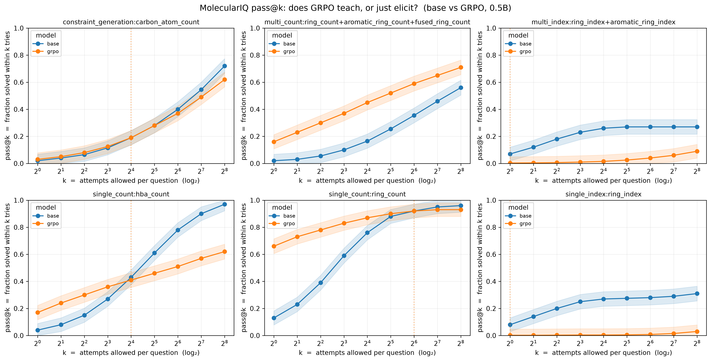

Verifier-Guided GRPO for Molecular Graph Reasoning in Large Language Models
Structure understanding is the bottleneck
Chemistry LLMs are scored on benchmarks that leak into pretraining. MolecularIQ instead asks only symbolically verifiable questions about the molecular graph — every answer is checked exactly with RDKit, isolating reasoning from memorization.

GRPO with the symbolic verifier as reward improves held-out exact-answer accuracy over prompt-only and SFT-only — most for counting & indexing.
Gains persist on unseen molecules and randomized / kekulized / ring-relabeled SMILES, and shrink as complexity rises.
After separating extraction validity from symbolic correctness, GRPO still raises correctness — it teaches reasoning, not just <answer> compliance.
Read with pass@k, GRPO mostly sharpens what the base can already reach (base catches up at large k) and expands only where skills compose; where exact success is unreachable it hacks the partial-credit reward. (see Fig 6 →)
Four conditions
- base — minimal prompting, no system message.
- prompted — MolecularIQ expert-chemist system prompt.
- SFT — full-parameter supervised fine-tuning on MolecularIQ train split.
- SFT+GRPO — full-parameter GRPO from the SFT checkpoint, verifier reward.
Splits are cluster-disjoint (MinHash-LSH on Morgan fingerprints); evaluation on the held-out hard pool.
lifts a 0.5B model
~4× over prompting
— SFT alone isn't enough.



Making indexing learnable — how to fix
Index needs exact symbolic execution, so the base never samples a correct set and RL can't reinforce it → it hacks the dense proxy (wide over-covering ranges). Fixes:
- Cold-start SFT on RDKit reasoning traces, then GRPO.
- Difficulty curriculum — tiny molecules first, so exact reward is reachable.
- De-hack the reward — precision/size penalty, or binary-only above a threshold.
- Tool use — let the model call RDKit; offloads the symbolic work.
Scale helps too, but is the brute-force version of cold-start.
What this shows
- A symbolic verifier is a clean RL reward for molecular reasoning — no LLM judge, no leakage.
- GRPO beats SFT-only and prompting on a tiny 0.5B model under a 24 h compute budget.
- Gains survive SMILES perturbation and aren't explained by formatting — evidence of reasoning.
- pass@k (H4) shows the gain is mostly sharpening, with real expansion only where skills compose — and a reward-hacking failure where exact match is unreachable.
Code & configs: [your repo URL] · Contact: [email]
→ repo